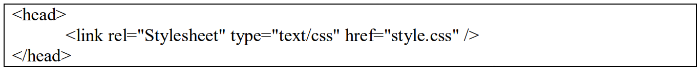
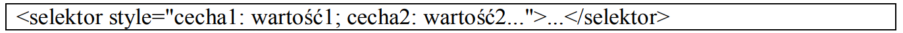
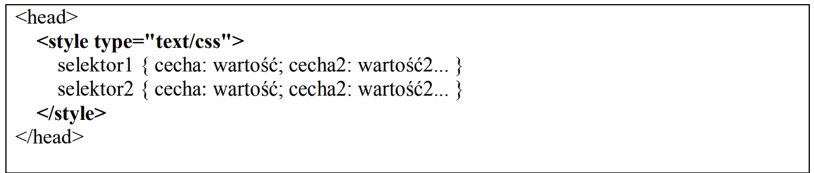

Kaskadowość stylów
Kaskadowość stylów określa pierwszeństwo w oddziaływaniu na te same elementy strony stylów z różnych źródeł (lokalny, zewnętrzny, wewnętrzny itp.). Style tworzą hierarchię tworząc kaskadę dlatego taka nazwa. Kaskadowość stylów pozwala zatem pracować z kilkoma źródłami stylów, bez obawy o wystąpienie konfliktów.
Priorytet ważności stylów (pierwszeństwo) wyglądałby tak:
Najważniejszy
1. Styl lokalny,
2. Rozciąganie stylu (SPAN),
3. Wydzielone bloki (DIV),
4. Wewnętrzny arkusz stylów,
5. Zewnętrzny arkusz stylów,
6. Import arkusza stylów,
7. Domyślne ustawienia przeglarki
Najmniejważny
!!!UWAGA!!!
Polecenie dołączenia zewnętrznego arkusza powinno znajdować się w dokumencie wcześniej niż wewnętrzny arkusz. Odwrotna kolejność złamie zasady kaskadowości!